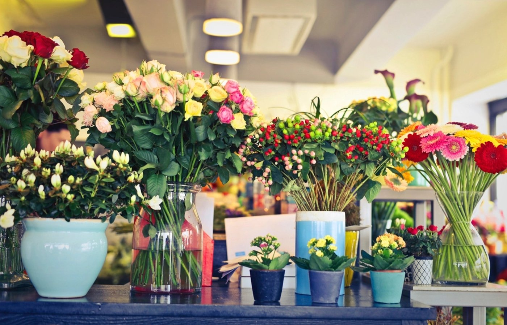
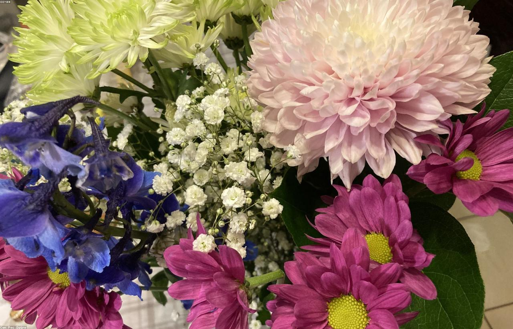
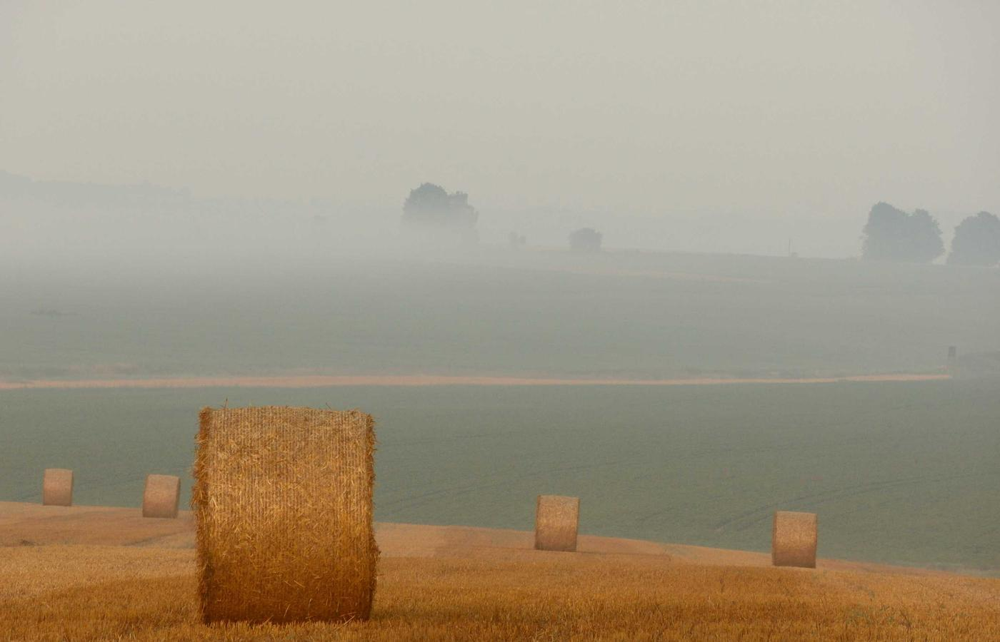

— vážeme pro vás s láskou už 19 let —
Každou kytici vážeme ručně, postaru a poctivě. A když máme zavřeno, čerstvou kytici pořídíte v našem automatu — prvním ve Strakonicích.

Květinářství Kytičky najdete na Velkém náměstí ve Strakonicích. Každou kytici vážeme ručně z čerstvých květin, s ohledem na příležitost i přání zákazníka. Věříme, že správná kytice dokáže říct víc než tisíc slov.

Nemusíte vědět, jaké květiny chcete. Stačí říct, o co jde a pro koho — zbytek vymyslíme za vás.
Svatební kytice, korsáže, výzdoba stolů i obřadu. Domluvíme se dopředu a sladíme barvy s tím, jak má den vypadat.
Narozeniny, výročí, „jen tak". Uvážeme kytici na počkání a poradíme, co se k dané osobě hodí.
Věnce, kytice a smuteční vazba s citem a bez zbytečných dotazů. Postaráme se o to rychle a důstojně.
Květiny do recepce, na provozovnu nebo ke stálým příležitostem. Domluvíme se na pravidelném rytmu.
Nejhezčí kytice vzniknou z toho, co je zrovna v sezóně. Konkrétní nabídku vám rádi řekneme po telefonu.
Tulipány, narcisy, hyacinty a první pivoňky. Období, kdy je všechno barevné a voní to po zahradě.
Pivoňky, růže, slunečnice a letničky. Hlavní svatební sezóna, na kterou je dobré myslet s předstihem.
Jiřiny, chryzantémy a sušené vazby. Čas dušiček, věnců a teplých barev.
Adventní věnce, vánoční vazba, amarylky a jarní cibuloviny napřed. Kus jara doma dřív, než přijde.

Květiny nečekají na otevírací dobu. U čerpací stanice OMV na místě bývalého autobusového nádraží máme samoobslužný automat s čerstvými kyticemi — sedm dní v týdnu, 24 hodin denně.
Kytice v automatu vážeme ze stejných čerstvých květin jako v květinářství.
Narozeniny, které málem vyšuměly, nebo radost jen tak — i o víkendu a v noci.
Svatba, výročí nebo smuteční obřad — u větších vazeb se ozvěte pár dní dopředu, ať máme čas sehnat přesně to, co si představujete.
Domluvit objednávkuSvatební kytice byla přesně podle představ a ještě hezčí, než jsem doufala. Květiny vydržely celý víkend.
Zákaznice · StrakonicePřišel jsem na poslední chvíli bez nápadu a odešel s kyticí, ze které měla maminka slzy v očích.
Zákazník · StrakoniceSmuteční vazbu vyřídili rychle a s obrovským citem. V takové chvíli to člověk ocení nejvíc.
Zákaznice · Strakonice